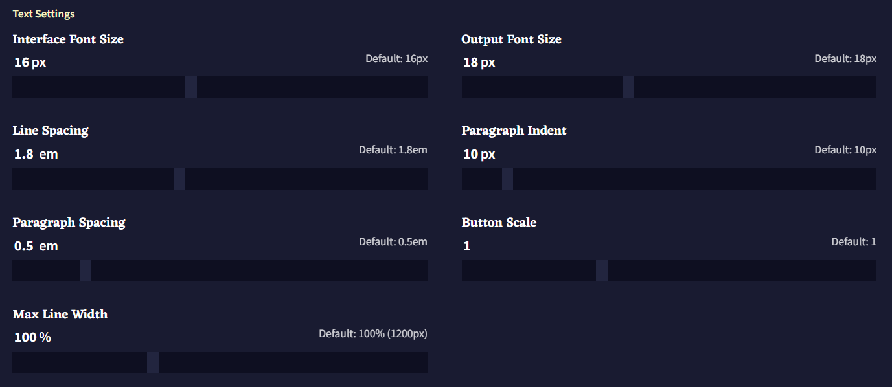
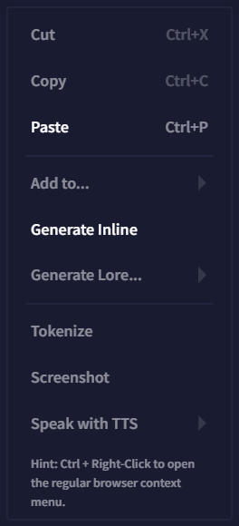
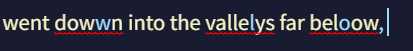
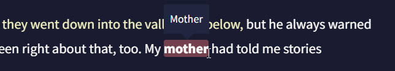
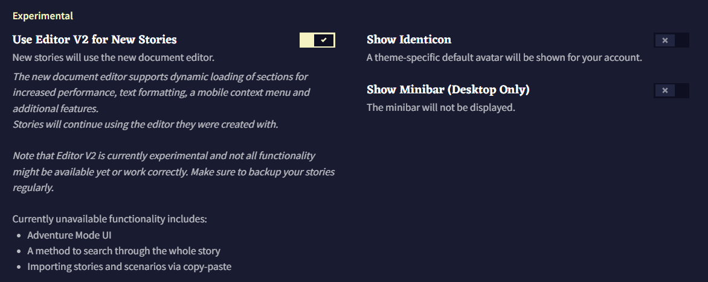

Interface
Interface 탭에는 텍스트 가독성과 버튼 사이즈 등을 조절하는데 필요한 모든 것들이 있습니다! 아래에서 각 기능에 대한 상세한 안내와 설명을 찾을 수 있습니다.

폰트 사이즈와 간격 외에도 해당 텝에서 철자교정과 입력 박스 같은 Editor 창의 특정 부분을 숨겨 더 부드러운 글쓰기 경험을 할 수 있을 뿐아니라, Editor V2와 Minibar 같은 실험적인 기능들도 활성화할 수 있습니다!
UI Language

현재, NovelAI는 영어와 일본어를 지원합니다. 대부분의 주요 UI 요소는 번역이 되었으며 전체 번역은 현재 진행 중입니다.
Goose tip: 사용자 계정 드롭다운에서 깃발을 클릭하여 언어를 바꿀 수도 있어요!
Text Settings

텍스트가 너무 작습니까? 혹은 너무 큽니까? 터치스크린에서 버튼을 선택하는데 어려움을 겪고 있습니까? Text Settings 슬라이더를 사용하여 NovelAI의 인터페이스를 원하는대로 리사이즈하십시오!

-
Interface Font Size
Interface Font Size 슬라이더로 메인 Editor 창을 제외한 모든 텍스트의 크기를 바꿀 수 있습니다. 인터페이스 텍스트의 최대 크기는 24px이고 최소 크기는 10px 입니다.
-
Output Font Size
Output Font Size 슬라이더는 Editor 창의 모든 텍스트 크기를 바꿉니다. 최대 값은 30px이고 최소 값은 10px 입니다.
- Line Spacing
Line Spacing 슬라이더는 텍스트의 개별 줄 사이의 간격을 조절합니다. 텍스트가 있는 줄이 서로 너무 가까워보인다면 Paragraph Spacing와 함께 이 슬라이더의 수치를 높여보십시오.
- Paragraph Indent
Paragraph Indent 슬라이더는 Editor 창의 문단 시작하는 부분의 들여쓰기 크기를 늘릴 수 있습니다. 이 들여쓰기는 각 개행 이후, 텍스트가 시작할 때 자동으로 놓입니다.
- Paragraph Spacing
Paragraph Spacing 슬라이더를 통해 Editor의 텍스트 문단 사이의 간격을 늘릴 수 있습니다. 이 슬라이더는 Line Spacing와 함꼐 작동하며 문단 사이에 추가적인 여백을 줍니다.
- Button Scale
Button Scale 슬라이더는 Editor 하단 Input Bar의 Lorebook
 , Undo
, Undo  , Redo
, Redo  , History, Retry 와 Send 버튼의 크기를 조절합니다.
, History, Retry 와 Send 버튼의 크기를 조절합니다.
- Max Line Width
Max Line Width 슬라이더는 Editor의 텍스트가 가로 폭의 넓이를 변경합니다. 이 슬라이더의 값을 늘리면 텍스트는 화면의 가장자리 가까이에 닿게 되고, 슬라이더의 값을 낮추면 텍스트는 압축됩니다.
Interaction Setting

- Gesture Controls
Gesture Controls 토글을 사용하면 터치스크린 기기를 이용하는 사용자가 Library와 Options 사이드바에서 스와이프 기능을 토글할 수 있습니다. 해당 토글을 활성화하면 화면 가장자리를 스와이프하여 사이드바를 열고 닫을 수 있습니다.
- Swap Context Menu Controls

Swap Context Menu Controls 토글은 NovelAI Editor의 마우스 오른쪽 버튼 메뉴의 기능을 전환할 수 있습니다. 기본적으로 오른쪽 버튼 클릭은 NovelAI의 특수한 Context Menu가 열리고, Ctrl + 오른쪽 버튼은 시스템 컨텍스트 메뉴가 열립니다. 해당 토글을 비활성화하면 설정이 뒤집혀 Ctrl + 오른쪽 버튼이 NovelAI의 컨텍스트 메뉴가 됩니다.
Other Settings

-
Input Box
[Editor V1 전용] Input Box 토글은 Editor 하단의 인풋 박스를 비활성화합니다.
-
Editor Highlighting
Editor Highlighting 토글은 원본과 Theme 탭에서 설정한 색에 따라 텍스트를 4가지의 다른 색으로 강조합니다.

-
Output Spellcheck

Output Spellcheck 토글은 Editor의 철자 교정을 활성화하거나 비활성화합니다. -
Context Viewer Colors
Context Viewer Colors 토글은 텍스트의 출처에 따라 Context Viewer의 텍스트 색상을 바꿉니다. 예를 들어, 기본적으로 메모리와 작가노트 박스의 텍스트는 서로 다른 음영있는 노란색으로 나타납니다. 이 토글을 끄면 Context Viewer에서 모든 텍스트가 기본 색상으로 나타납니다.

-
Editor Lorebook Keys

[Editor V1 전용] Editor Lorebook Keys 토글은 에디터에서 로어북 키가 나타나면 Lorebook 키를 강조표시한다. 키는 굵게 강조처리되고 키 위에 마우스 포인터를 가져다대면 트리거된 Lorebook Entry의 이름이 보여진다. -
Show Story Title
Show Story Title 토글을 사용하면 Editor 창 산단에 표시되는 스토리 제목을 활성화하거나 비활성화할 수 있다.
-
Show Tips
Tips는 Editor 하단, 입력 표시줄input bar 위에 나타난다. Show Tips 토글은 이것을 켜고 끌 수 있다.
Experimental Settings

- Use Editor V2 for New Stories
Editor V2는 이 문서의 Editor 섹션에서 다루는 NovelAI Editor의 풀 리디자인된 에디터입니다. Use Editor V2 for New Stories 토글은 새 이야기를 작성할 때 적용됩니다. 해당 토글이 활성화되면 Library Sidebar를 통해 이전 이야기를 백업하고 Editor V2로 변환할 수도 있습니다!
- Show Identicon

Show Identicon 토글은 Library Sidebar 상단에 NovelAI 거위 마스코트의 테마별 아바타를 활성화합니다. 이 거위 identicon은 Theme 탭에서 사양자가 선택한 NovelAI의 테마에 따라 색상이 바뀝니다.
- Show Minibar (Desktop Only)

Minibar는 Desktop Only 기능입니다. 미니바는 축약된 스토리 제목들과 마우스로 호버 가능한 스토리 설명이 있는 미니 사이드바를 화면 왼쪽 사이드에 추가합니다. 미니바를 사용하여 Library Sidebar보다 덜 귀찮은 방법으로 스토리 사이를 빠르게 전환하십시오!